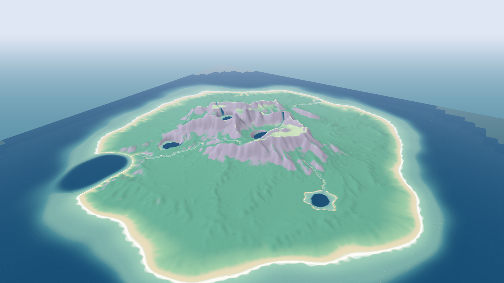

We made our first islands
Today we got the first real islands on screen. You give the generator a seed and a locale, and it hands back the same island every time, which is the property we need for sharing islands as links later.
The recipe is a mix of old tricks done carefully: a soft circular falloff with a wobbly coast, layered hills, ridged noise for mountains, and then rain. We drop tens of thousands of virtual raindrops that pick up and set down dirt, which is what turns blobby noise into valleys that look like water has been at them. Rivers are traced downhill and carved in, and lakes are scooped out with their own flat water level.
We kept the look flat and pastel on purpose. Instead of real lights, the sun, the shadows and the dark crevices are baked into the colour of each vertex, then nudged into soft bands so it feels like a toon print. The water gets a depth tint and a bright foam line where it meets the sand.
There are four locales for now: a gentle meadow with a cove, tall highlands with snow and lakes, a scatter of sandbar islands, and a flat harbor coast. No streets, houses or gameplay yet. Terrain first, then streets, then lots.



What still looks bad
- Rivers are thin and a bit stair-stepped from far away; lake rims can look like pits.
- Meadow Cove is a big flat green plain; it needs landmarks and more varied relief.
- Shore views are low drama: wide flat beach, soft hills, nothing to look at yet.
- Highland rock reads as a flat purple with little texture; snow caps barely show.
- Harbor Town has a bay but no real harbor shelf, quay or flat build plateau yet.
- Zones look random: pink flower patches have no logic, colours are a bit saturated teal.
- Water foam is a thick white band and water glints are faint.
- No trees, rocks or props, so scale is hard to read.
- Coast edge is slightly fuzzy where noise and warp fight each other.
- Generation takes a couple of seconds in the browser (single thread).
Next
- Fix the weak spots above (river width, lake rims, rock texture, snow).
- Then streets, then lots and massing.